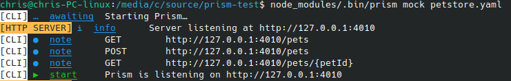
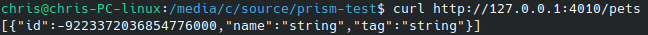
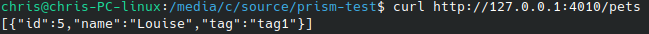

OpenAPI mocking with prism
When doing full-stack development as part of a team, adding a new feature often happens in the order:
- Modify infrastructure (relational database, elastic etc.) to store whatever's required for the new feature
- Add business layer (e.g. REST API) functionality
- Update front-end to present the new feature to users.
In general doing steps 2 and 3 will rely on having a version of the previous step available to work on, and this can slow things down - but there are some powerful tools to help break these schedule dependencies.
The example I have today is a tool called prism, which breaks the dependency between steps 2 and 3 when you're using an OpenAPI specification to define your API. Once you've got your endpoints agreed and specified, prism can take your spec file and spin up a server that'll give realistic answers to your requests, which should be enough to let you get going on your front end development straight away.
First, install prism:
npm install -g @stoplight/prism-cli
Then, it's as simple as pointing prism at your spec file, here as an example I've used the venerable petstore.yaml:
prism mock petstore.yaml

Now a curl to the endpoint will generate a response that complies with the spec:

You can see here that the fields generated aren't particularly realistic, though - for example the string fields just take the value "string". If needed, you can improve this by adding examples to your spec under the response or schema - if they're available then prism will pick from those. This is in general a good idea for improving the clarity of your spec, particularly if you expect it to be widely used, or if you're using it to generate documentation.
So if I edit petstore.yaml to add an example for the fields for the Pet object:
components:
schemas:
Pet:
type: object
required:
- id
- name
properties:
id:
type: integer
format: int64
example: 5
name:
type: string
example: Louise
tag:
type: string
example: tag1
Now once prism is restarted, the response will look a little saner:
